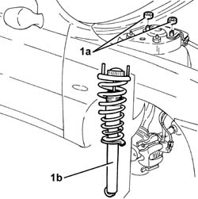

4410A10 l/h or r/h front suspension spring/damper unit (one) - r+r - check wheel geometry separately if necessary
- Path
- Procedures > 44 SUSPENSION AND WHEELS > 4410 FRONT SUSPENSION > 4410A front dampers and springs > 4410A10 l/h or r/h front suspension spring/damper unit (one) - r+r - check wheel geometry separately if necessary
- Kind
- repair procedure (removal / refitting; the operation number is the code)
- Applies to
- all engines; all production periods
- Interactive page
- https://sloeber94.github.io/elrnDB-a156/en/#/3238177
Applies to: all engines; all production periods
 Removing
Removing
 Refitting
Refitting4410A80 damper lower fork - r r
4450B10 Front WHEEL (one) - R.R.
7055B64 Engine compartment DUST shield in front wheel arch (one), left or right - R.R.
1. Unscrew the nuts (1a) and remove the spring schock absorber group of the front suspension (1b).

Applies to: all engines; all production periods
Refitting
RemovingInstall the spring schock absorber group and fix it with its nuts to the torque.
 | Fastening | Component | Ø | Value (daNm) |
|---|---|---|---|---|
- | Nut | FRONT DAMPER TOP ATTACHMENT | M8 | 2.4 - 2.9 |
7055B64 Engine compartment DUST shield in front wheel arch (one), left or right - R.R.
Topics linked from this page (3)
- 4410A80 damper lower fork - r r
- 4450B10 Front WHEEL (one) - R.R.
- 7055B64 Engine compartment DUST shield in front wheel arch (one), left or right - R.R.
Topics that link to this page (6)
- H01 VEHICLE DRIFT
- H12 STEERING TOO SENSITIVE
- X50 TYRE WEAR
- 2110D53 left hand flange on differential - r+r
- 4410A12 front suspension damper (one), lh or rh - for mcpherson strut system - includes dismantling/re-building of assembly at bench r r
- 4410B68 lower swinging arm(one), lh or rh of front suspension - r r -check wheel alignment separately